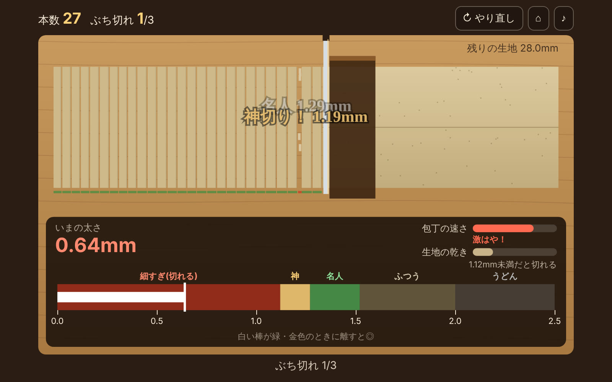

職人タイミングゲームPrecision timing
極細そば切り名人Ultra-Thin Soba Master
江戸のそば職人は、約3cmの生地を23本に切ったといわれます。1本あたり約1.3mm。このゲームでは、その細さの限界に挑みます。Edo-era soba masters are said to have cut about 3 cm of dough into 23 strands — roughly 1.3 mm each. This game asks how close to the limit you can go.
遊び方How to play
- 画面を長押しすると包丁が動き、離すと切れるHold the screen to slide the knife, release to chop
- 太さゲージの緑か金色で離すと成功。金色は「神切り」Release in the green or gold zone of the gauge. Gold is a God Cut
- 1.0mm未満は「ぶち切れ」、2.0mmより太いと「うどん」で0本。ぶち切れ3回で終了Under 1.0 mm the noodle snaps; over 2.0 mm it counts as udon. Three snaps and you are out
見どころHighlights
- 包丁の速さは揺れながら上がり、時間が経つと生地が乾いて切れやすくなるThe knife speeds up and wobbles, and the dough dries out over time
- 通常・タイムアタック30秒・一本勝負・ゴーストバトルの4モードFour modes: classic, 30-second time attack, one-shot and ghost race
- 世界ランキングと23種類の称号（隠し称号あり）Global leaderboards and 23 titles, some of them hidden
- 友達に挑戦状リンクを送って、自分のゴーストと勝負してもらえるSend a friend a challenge link to race against your ghost